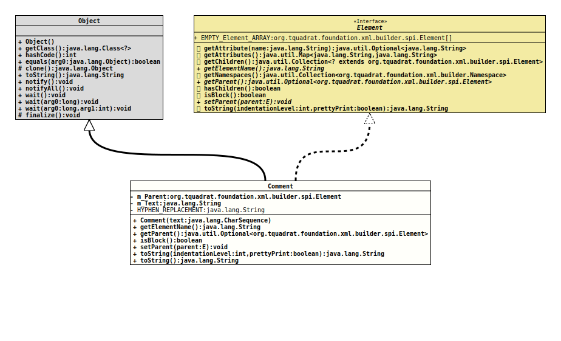

Module org.tquadrat.foundation.xml
Class Comment
java.lang.Object
org.tquadrat.foundation.xml.builder.internal.Comment
- All Implemented Interfaces:
Element
@ClassVersion(sourceVersion="$Id: Comment.java 980 2022-01-06 15:29:19Z tquadrat $")
@API(status=INTERNAL,
since="0.0.5")
public class Comment
extends Object
implements Element
This class defines a SGML comment.
- Author:
- Thomas Thrien (thomas.thrien@tquadrat.org)
- Version:
- $Id: Comment.java 980 2022-01-06 15:29:19Z tquadrat $
- Since:
- 0.0.5
- UML Diagram
-

UML Diagram for "org.tquadrat.foundation.xml.builder.internal.Comment"
{kind=link}
-
Field Summary
Fields -
Constructor Summary
Constructors -
Method Summary
Modifier and TypeMethodDescriptionfinal StringReturns the name of the element.Returns the parent of this element.final booleanisBlock()Returns the block flag.
This flag is used in the conversion of the element into a String; it indicates whether the element is 'inline' (like an HTML <span>) or 'block' (as an HTML <div>).final <E extends Element>
voidsetParent(E parent) Sets the parent for this element.final StringtoString()final StringtoString(int indentationLevel, boolean prettyPrint) Returns a String representation for this element instance.Methods inherited from class java.lang.Object
clone, equals, finalize, getClass, hashCode, notify, notifyAll, wait, wait, waitMethods inherited from interface org.tquadrat.foundation.xml.builder.spi.Element
getAttribute, getAttributes, getChildren, getNamespaces, hasChildren
-
Field Details
-
m_Parent
The parent element for this comment. -
m_Text
The text. -
HYPHEN_REPLACEMENT
The hyphen replacement (escaped).
-
-
Constructor Details
-
Comment
Creates a newCommentobject.- Parameters:
text- The text.
-
-
Method Details
-
getElementName
Returns the name of the element.- Specified by:
getElementNamein interfaceElement- Returns:
- The name of the element.
-
getParent
Returns the parent of this element. -
isBlock
Returns the block flag.
This flag is used in the conversion of the element into a String; it indicates whether the element is 'inline' (like an HTML <span>) or 'block' (as an HTML <div>). This is important only for elements where whitespace is relevant, like for HTML elements, as pretty printing will add additional whitespace around inline elements that can become visible on parsing (for HTML: on the rendered page).
XML elements for example will be always block as there whitespace is not that important.
Obviously,trueindicates a block element, whilefalsestands for an inline element.
The default istrue. -
setParent
Sets the parent for this element. -
toString
Returns a String representation for this element instance. -
toString
-